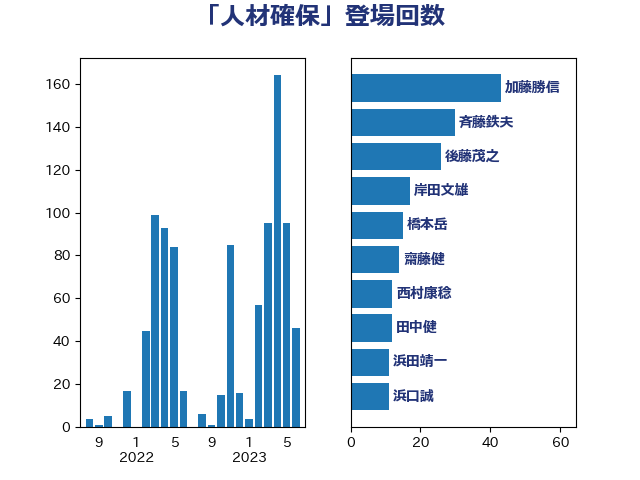

単語「人材確保」

| 加藤勝信 | 自由民主党 | 43 回 |
| 斉藤鉄夫 | 公明党 | 30 回 |
| 後藤茂之 | 自由民主党 | 26 回 |
| 岸田文雄 | 自由民主党 | 17 回 |
| 橋本岳 | 自由民主党 | 15 回 |
| 齋藤健 | 自由民主党 | 14 回 |
| 西村康稔 | 自由民主党 | 12 回 |
| 田中健 | 国民民主党 | 12 回 |
| 浜田靖一 | 自由民主党 | 11 回 |
| 浜口誠 | 国民民主党 | 11 回 |
| 田村まみ | 国民民主党 | 10 回 |
| 川田龍平 | 立憲民主党 | 10 回 |
| 山口俊一 | 自由民主党 | 10 回 |
| 本田顕子 | 自由民主党 | 9 回 |
| 村田享子 | 立憲民主党 | 8 回 |
| 三浦信祐 | 公明党 | 8 回 |
| 美延映夫 | 日本維新の会 | 7 回 |
| 小熊慎司 | 立憲民主党 | 7 回 |
| 倉林明子 | 日本共産党 | 7 回 |
| 高木かおり | 日本維新の会 | 6 回 |
| 西岡秀子 | 国民民主党 | 6 回 |
| 芳賀道也 | 国民民主党 | 6 回 |
| 永岡桂子 | 自由民主党 | 6 回 |
| 永井学 | 自由民主党 | 6 回 |
| 小倉將信 | 自由民主党 | 6 回 |
| 高見康裕 | 自由民主党 | 5 回 |
| 谷合正明 | 公明党 | 5 回 |
| 角田秀穂 | 公明党 | 5 回 |
| 熊谷裕人 | 立憲民主党 | 5 回 |
| 柚木道義 | 立憲民主党 | 5 回 |
| 松本剛明 | 自由民主党 | 5 回 |
| 末松信介 | 自由民主党 | 5 回 |
| 宮本徹 | 日本共産党 | 5 回 |
| 伊佐進一 | 公明党 | 5 回 |
| 音喜多駿 | 日本維新の会 | 4 回 |
| 長友慎治 | 国民民主党 | 4 回 |
| 金村龍那 | 日本維新の会 | 4 回 |
| 野田聖子 | 自由民主党 | 4 回 |
| 野中厚 | 自由民主党 | 4 回 |
| 西銘恒三郎 | 自由民主党 | 4 回 |
| 船橋利実 | 自由民主党 | 4 回 |
| 臼井正一 | 自由民主党 | 4 回 |
| 窪田哲也 | 公明党 | 4 回 |
| 石井啓一 | 公明党 | 4 回 |
| 渡辺博道 | 自由民主党 | 4 回 |
| 森山浩行 | 立憲民主党 | 4 回 |
| 森屋隆 | 立憲民主党 | 4 回 |
| 梅村みずほ | 日本維新の会 | 4 回 |
| 岬麻紀 | 日本維新の会 | 4 回 |
| 小沢雅仁 | 立憲民主党 | 4 回 |
| 古賀友一郎 | 自由民主党 | 4 回 |
| 伊藤俊輔 | 立憲民主党 | 4 回 |
| 井坂信彦 | 立憲民主党 | 4 回 |
| 中野洋昌 | 公明党 | 4 回 |
| 金城泰邦 | 公明党 | 3 回 |
| 野田佳彦 | 立憲民主党 | 3 回 |
| 遠藤良太 | 日本維新の会 | 3 回 |
| 舞立昇治 | 自由民主党 | 3 回 |
| 石井苗子 | 日本維新の会 | 3 回 |
| 田名部匡代 | 立憲民主党 | 3 回 |
| 漆間譲司 | 日本維新の会 | 3 回 |
| 津島淳 | 自由民主党 | 3 回 |
| 河野義博 | 公明党 | 3 回 |
| 河西宏一 | 公明党 | 3 回 |
| 星北斗 | 自由民主党 | 3 回 |
| 日下正喜 | 公明党 | 3 回 |
| 平沼正二郎 | 自由民主党 | 3 回 |
| 岩本剛人 | 自由民主党 | 3 回 |
| 加田裕之 | 自由民主党 | 3 回 |
| 佐藤正久 | 自由民主党 | 3 回 |
| 三浦靖 | 自由民主党 | 3 回 |
| 三ッ林裕巳 | 自由民主党 | 3 回 |
| 鬼木誠 | 立憲民主党 | 2 回 |
| 阿部司 | 日本維新の会 | 2 回 |
| 鈴木俊一 | 自由民主党 | 2 回 |
| 野間健 | 立憲民主党 | 2 回 |
| 赤池誠章 | 自由民主党 | 2 回 |
| 藤井比早之 | 自由民主党 | 2 回 |
| 藤井一博 | 自由民主党 | 2 回 |
| 萩生田光一 | 自由民主党 | 2 回 |
| 羽田次郎 | 立憲民主党 | 2 回 |
| 細田博之 | 自由民主党 | 2 回 |
| 竹谷とし子 | 公明党 | 2 回 |
| 神谷宗幣 | 参政党 | 2 回 |
| 石川昭政 | 自由民主党 | 2 回 |
| 石川博崇 | 公明党 | 2 回 |
| 牧島かれん | 自由民主党 | 2 回 |
| 牧山ひろえ | 立憲民主党 | 2 回 |
| 浜野喜史 | 国民民主党 | 2 回 |
| 河野太郎 | 自由民主党 | 2 回 |
| 江田憲司 | 立憲民主党 | 2 回 |
| 水野素子 | 立憲民主党 | 2 回 |
| 比嘉奈津美 | 自由民主党 | 2 回 |
| 橘慶一郎 | 自由民主党 | 2 回 |
| 横山信一 | 公明党 | 2 回 |
| 森本真治 | 立憲民主党 | 2 回 |
| 梅谷守 | 立憲民主党 | 2 回 |
| 林芳正 | 自由民主党 | 2 回 |
| 末次精一 | 立憲民主党 | 2 回 |
| 新垣邦男 | 立憲民主党 | 2 回 |
| 平林晃 | 公明党 | 2 回 |
| 平山佐知子 | 無所属 | 2 回 |
| 川崎ひでと | 自由民主党 | 2 回 |
| 岸真紀子 | 立憲民主党 | 2 回 |
| 岡本あき子 | 立憲民主党 | 2 回 |
| 山崎正恭 | 公明党 | 2 回 |
| 山岡達丸 | 立憲民主党 | 2 回 |
| 尾身朝子 | 自由民主党 | 2 回 |
| 小林鷹之 | 自由民主党 | 2 回 |
| 宮崎雅夫 | 自由民主党 | 2 回 |
| 守島正 | 日本維新の会 | 2 回 |
| 奥下剛光 | 日本維新の会 | 2 回 |
| 和田義明 | 自由民主党 | 2 回 |
| 吉田宣弘 | 公明党 | 2 回 |
| 古川禎久 | 自由民主党 | 2 回 |
| 古川元久 | 国民民主党 | 2 回 |
| 勝目康 | 自由民主党 | 2 回 |
| 加藤鮎子 | 自由民主党 | 2 回 |
| 佐藤英道 | 公明党 | 2 回 |
| 伊藤孝江 | 公明党 | 2 回 |
| 仁木博文 | 無所属 | 2 回 |
| 井野俊郎 | 自由民主党 | 2 回 |
| 下野六太 | 公明党 | 2 回 |
| 上田勇 | 公明党 | 2 回 |
| 三宅伸吾 | 自由民主党 | 2 回 |
| 一谷勇一郎 | 日本維新の会 | 2 回 |
| 黄川田仁志 | 自由民主党 | 1 回 |
| 鰐淵洋子 | 公明党 | 1 回 |
| 高橋光男 | 公明党 | 1 回 |
| 高市早苗 | 自由民主党 | 1 回 |
| 馬淵澄夫 | 立憲民主党 | 1 回 |
| 青柳陽一郎 | 立憲民主党 | 1 回 |
| 青木愛 | 立憲民主党 | 1 回 |
| 階猛 | 立憲民主党 | 1 回 |
| 阿部知子 | 立憲民主党 | 1 回 |
| 門山宏哲 | 自由民主党 | 1 回 |
| 鈴木義弘 | 国民民主党 | 1 回 |
| 鈴木淳司 | 自由民主党 | 1 回 |
| 野田国義 | 立憲民主党 | 1 回 |
| 野村哲郎 | 自由民主党 | 1 回 |
| 里見隆治 | 公明党 | 1 回 |
| 道下大樹 | 立憲民主党 | 1 回 |
| 進藤金日子 | 自由民主党 | 1 回 |
| 足立敏之 | 自由民主党 | 1 回 |
| 足立康史 | 日本維新の会 | 1 回 |
| 越智俊之 | 自由民主党 | 1 回 |
| 谷田川元 | 立憲民主党 | 1 回 |
| 谷公一 | 自由民主党 | 1 回 |
| 西野太亮 | 自由民主党 | 1 回 |
| 蓮舫 | 立憲民主党 | 1 回 |
| 菊田真紀子 | 立憲民主党 | 1 回 |
| 自見はなこ | 自由民主党 | 1 回 |
| 羽生田俊 | 自由民主党 | 1 回 |
| 竹内譲 | 公明党 | 1 回 |
| 空本誠喜 | 日本維新の会 | 1 回 |
| 稲津久 | 公明党 | 1 回 |
| 福重隆浩 | 公明党 | 1 回 |
| 福島伸享 | 無所属 | 1 回 |
| 福岡資麿 | 自由民主党 | 1 回 |
| 福山哲郎 | 立憲民主党 | 1 回 |
| 礒崎哲史 | 国民民主党 | 1 回 |
| 石川香織 | 立憲民主党 | 1 回 |
| 田畑裕明 | 自由民主党 | 1 回 |
| 牧義夫 | 立憲民主党 | 1 回 |
| 瀬戸隆一 | 自由民主党 | 1 回 |
| 渡辺周 | 立憲民主党 | 1 回 |
| 渡辺創 | 立憲民主党 | 1 回 |
| 浜地雅一 | 公明党 | 1 回 |
| 浅野哲 | 国民民主党 | 1 回 |
| 榛葉賀津也 | 国民民主党 | 1 回 |
| 森田俊和 | 立憲民主党 | 1 回 |
| 柴愼一 | 立憲民主党 | 1 回 |
| 柳本顕 | 自由民主党 | 1 回 |
| 枝野幸男 | 立憲民主党 | 1 回 |
| 東徹 | 日本維新の会 | 1 回 |
| 杉尾秀哉 | 立憲民主党 | 1 回 |
| 木原稔 | 自由民主党 | 1 回 |
| 早稲田ゆき | 立憲民主党 | 1 回 |
| 新谷正義 | 自由民主党 | 1 回 |
| 新妻秀規 | 公明党 | 1 回 |
| 打越さく良 | 立憲民主党 | 1 回 |
| 庄子賢一 | 公明党 | 1 回 |
| 市村浩一郎 | 日本維新の会 | 1 回 |
| 川合孝典 | 国民民主党 | 1 回 |
| 島村大 | 自由民主党 | 1 回 |
| 岩田和親 | 自由民主党 | 1 回 |
| 岡田直樹 | 自由民主党 | 1 回 |
| 山田宏 | 自由民主党 | 1 回 |
| 山田勝彦 | 立憲民主党 | 1 回 |
| 山本香苗 | 公明党 | 1 回 |
| 山本博司 | 公明党 | 1 回 |
| 小林茂樹 | 自由民主党 | 1 回 |
| 小宮山泰子 | 立憲民主党 | 1 回 |
| 天畠大輔 | れいわ新選組 | 1 回 |
| 大島敦 | 立憲民主党 | 1 回 |
| 堀場幸子 | 日本維新の会 | 1 回 |
| 城井崇 | 立憲民主党 | 1 回 |
| 國重徹 | 公明党 | 1 回 |
| 国光あやの | 自由民主党 | 1 回 |
| 和田有一朗 | 日本維新の会 | 1 回 |
| 吉良よし子 | 日本共産党 | 1 回 |
| 吉田はるみ | 立憲民主党 | 1 回 |
| 吉田とも代 | 日本維新の会 | 1 回 |
| 古賀篤 | 自由民主党 | 1 回 |
| 勝部賢志 | 立憲民主党 | 1 回 |
| 勝俣孝明 | 自由民主党 | 1 回 |
| 加藤竜祥 | 自由民主党 | 1 回 |
| 中曽根康隆 | 自由民主党 | 1 回 |
| 中川郁子 | 自由民主党 | 1 回 |
| 上野通子 | 自由民主党 | 1 回 |
| 上月良祐 | 自由民主党 | 1 回 |
| おおつき紅葉 | 立憲民主党 | 1 回 |